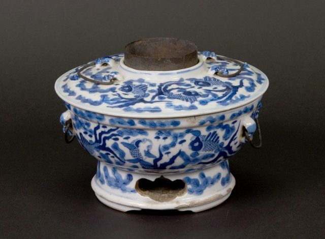

The Chinese Porcelain Hot pot, which originated from the Qing Dynasty period of China, is a remarkable piece of culinary
heritage. Known for its beautiful design, the hot pot features intricate patterns of seaweed and goldfish,
symbolizing prosperity and harmony. The middle of the pot includes a brass pipe for inserting batteries, while
the tall base has a hole cut into the bottom to facilitate the pouring of ashes.
This hot pot is supported by three legs and showcases four Chinese characters, indicating its cultural significance.
On the bottom, the manufacturer's brand name is proudly displayed, further emphasizing the craftsmanship behind this
exquisite piece. Traditionally used for communal meals, this porcelain hot pot combines functionality with artistic
beauty, making it a cherished item that bridges culinary tradition and cultural artistry.
Chinese Porcelain
